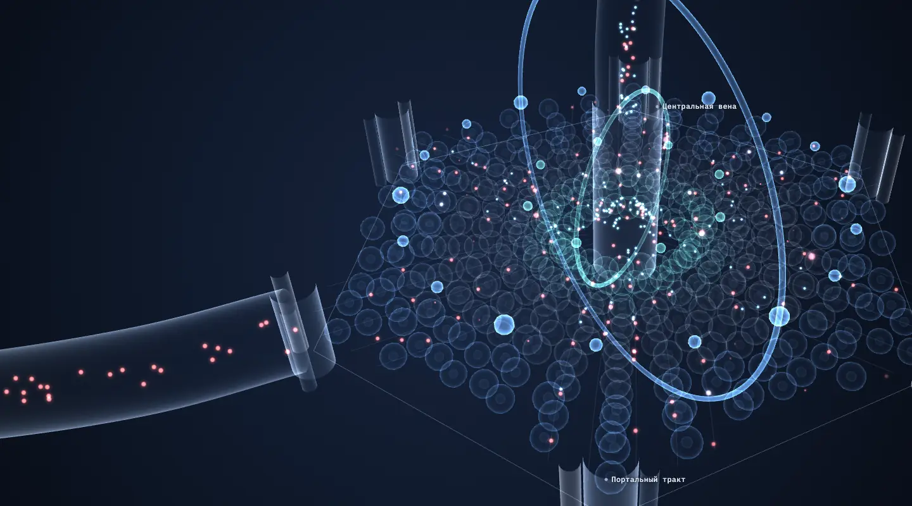
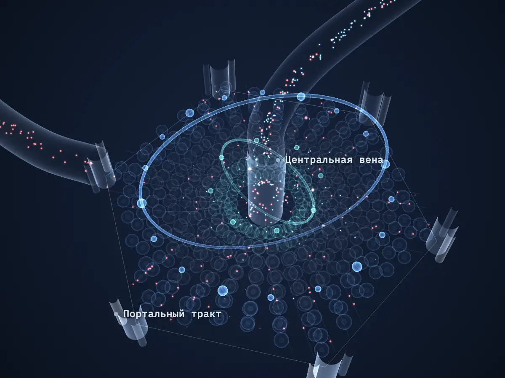
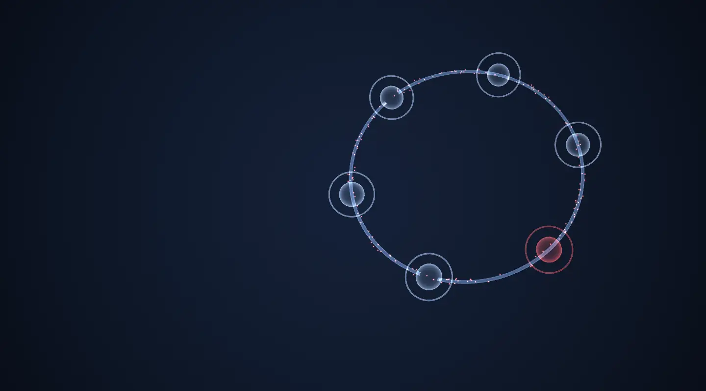
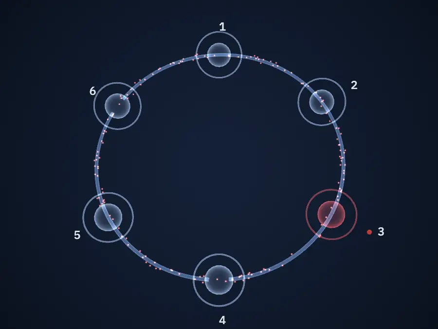
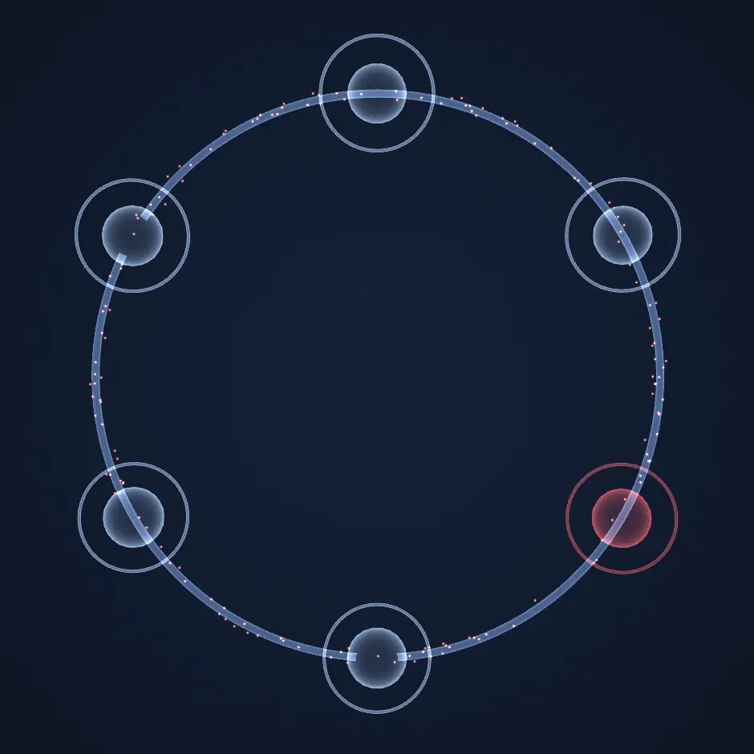
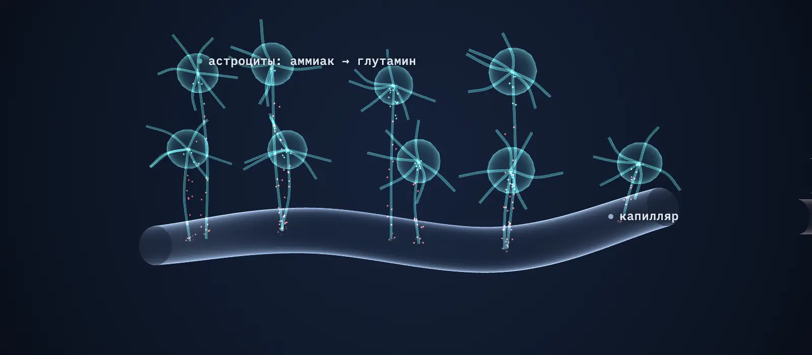
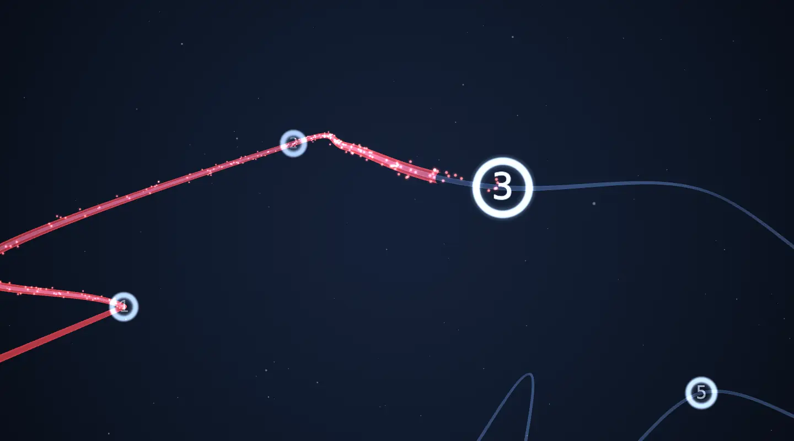
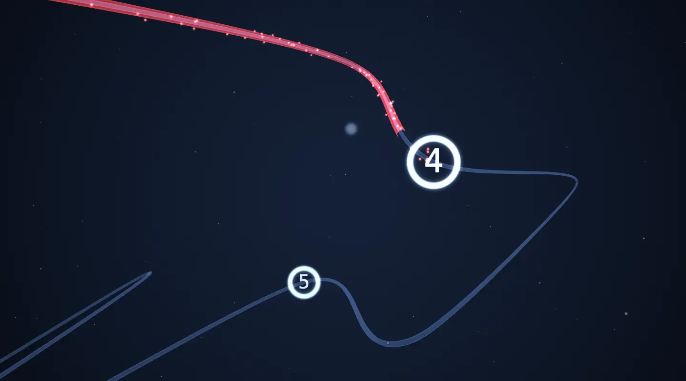
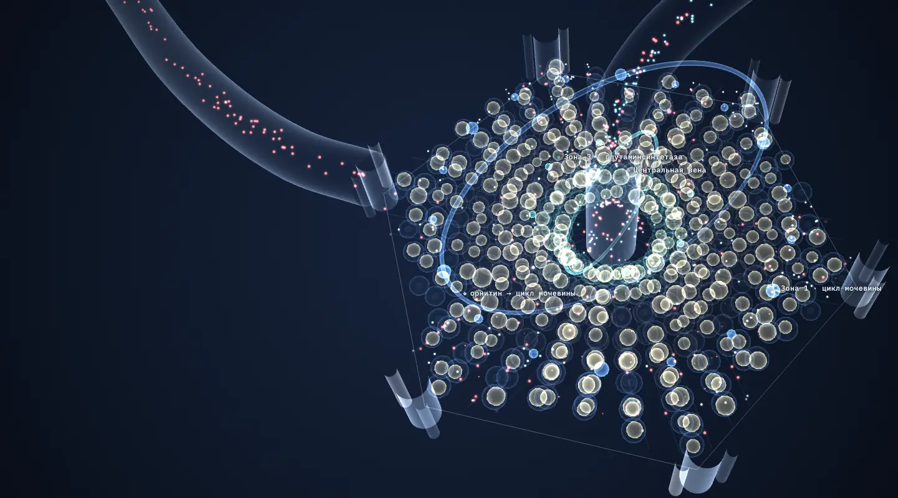
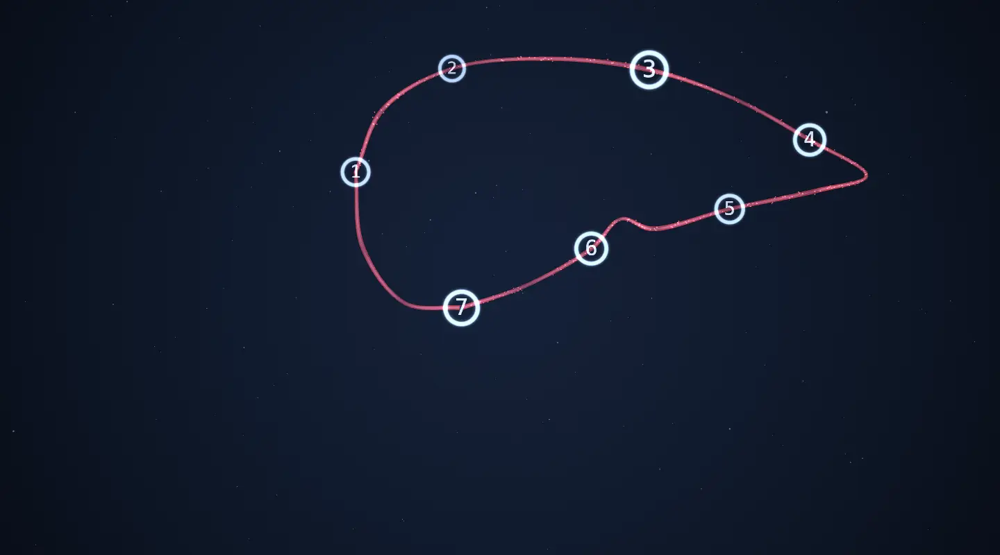

Иллюстрация: двадцать пять кружков теста связи чисел в глубине тёмного поля; линия пера соединяет их по порядку от 1 до 25.
Интерактивная версия доклада
Гипераммониемия у пациентов на доцирротической стадии заболеваний печени
Повышенный аммиак — не только проблема цирроза. Пройдите доклад в своём темпе: семь коротких глав, тест связи чисел прямо на экране и пять ключевых выводов, которые откроются по ходу.
Агеева Елена Афанасьевнаврач-гастроэнтеролог, лечебно-консультативная поликлиника «Доктор рядом»
Материал подготовлен для медицинских специалистов в образовательных целях. Он не заменяет очную консультацию и инструкцию по медицинскому применению препаратов. Экранные версии тестов демонстрируют методику и не являются диагностикой.

Иллюстрация: камера проходит по воротной вене в дольку печени. Частицы аммиака идут по синусоидам от портальных трактов к центральной вене; в перипортальной зоне часть из них превращается в мочевину, в перивенозной — в глутамин.
Долька печени · схема, не в масштабе
1
Глава 1 из 7
Гипераммониемия начинается до цирроза
Повышенный аммиак традиционно связывают с циррозом и печёночной энцефалопатией. Но система обезвреживания аммиака начинает сдавать раньше — уже на стадии стеатоза.
Levitt D.G., Levitt M.D., 2018; Thomsen K.L. и соавт., 2023
Листайте вниз
Схема · переключите состояние печени
Где образуется и где обезвреживается аммиак

Долька печени · схема, не в масштабе
Иллюстрация: долька печени в выбранном состоянии. Скорость вращения кольца цикла мочевины соответствует мощности цикла на шкале справа; при стеатозе в гепатоцитах видны липидные капли; при шунте часть потока идёт в обход дольки.
Мощность цикла мочевины100 %
референс
Аммиак, мкмоль/лФлагГде измерено
12–40Nартериальная кровь
Кишечник даёт основной поток аммиака: в воротной вене его концентрация примерно в 3 раза выше системной. Печень извлекает около 73 % портального аммиака — половину превращает в мочевину в перипортальных гепатоцитах, половину связывает в глутамин в перивенозных. Мышцы работают буфером.
Levitt D.G., Levitt M.D., 2018; Thomsen K.L. и соавт., 2023
Проверьте интуицию
У какой доли амбулаторных пациентов без цирроза аммиак выше нормы?
Речь о пациентах с НАЖБП и хроническими гепатитами, которые приходят на обычный приём. Передвиньте ползунок и сравните свой ответ с данными российских исследований.
Гаранина Е.В., 2021; Кизова Е.А., Потехина Ю.П., 2019; Ильченко Л.Ю., Никитин И.Г., 2018; Зыкина Е.Ю., Симонова Ж.Г., 2023; Шавкута Г.В. и соавт., 2019. Порог гипераммониемии в работах — 54–60 мкмоль/л.

Иллюстрация: кольцо из шести звеньев порочного круга, по которому по часовой стрелке движутся частицы аммиака.
Порочный круг · схема
2
Глава 2 из 7
Аммиак — участник болезни, а не только маркёр
Аммиак не просто накапливается, когда печень слабеет, — он сам ускоряет её поражение. Нажмите на звенья круга, чтобы увидеть доказательства.
Jalan R. и соавт., 2016; De Chiara F. и соавт., 2018, 2020; Song Q. и соавт., 2024
Листайте вниз
Схема · нажмите на звено
Порочный круг: стеатоз → аммиак → фиброз


мишень
мишень
мишень
мишень
↺ и снова к стеатозу — круг замыкается
Выберите звено круга
Каждое звено подкреплено исследованием. Откройте хотя бы три, чтобы увидеть, как они связаны.
Три органа-мишени
Что аммиак делает за пределами печени

Схема · не в масштабе
Иллюстрация к выбранной карточке ниже: в мозге аммиак из капилляра переходит в астроциты и превращается в глутамин, астроциты набухают; в мышце волокна истончаются; в печени звёздчатые клетки выпускают отростки, появляются нити коллагена.
Головной мозг
Проникает через гематоэнцефалический барьер и превращается в глутамин в астроцитах: отёк астроцитов, оксидативный стресс, нарушение нейротрансмиссии. Исход — от минимальной до явной энцефалопатии.
Скелетные мышцы
Через NF-κB повышает экспрессию миостатина, усиливает аутофагию и протеолиз. Мышца теряет массу и способность связывать аммиак; снижение аммиака обращает саркопению в эксперименте.
Jalan R. и соавт., 2016; Qiu J. и соавт., 2013; Kumar A. и соавт., 2017; Lai J.C. и соавт., AASLD, 2021
Данные · прогноз при циррозе
Аммиак предсказывает исходы точнее привычных шкал
ОР 2,13
риск госпитализации с печёночными осложнениями в зависимости от отношения аммиак / верхняя граница нормы; 754 стабильных амбулаторных пациента с циррозом. Для смертности — ОР 1,45.
Tranah T.H. и соавт., 2022
1,4 × ВГН
оптимальный порог отношения аммиака к норме лаборатории; точность прогноза осложнений в течение года — AUROC 77,9 %.
Tranah T.H. и соавт., 2022
ОР 4,4
риск явной печёночной энцефалопатии при сочетании высокого аммиака и патологического психометрического теста PHES (модель AMMON-OHE).
Ballester M.P. и соавт., 2023
Для доцирротической стадии таких прогностических порогов пока нет. Но ключевые детерминанты будущего прогноза — фиброз, мышечная масса, когнитивные функции — уже зависят от аммиака.

Иллюстрация: бордовая линия пера соединяет пройденные главы-узлы.
Путь глав · линия пера
3
Глава 3 из 7
Как узнать этого пациента
Латентная гипераммониемия не похожа на печёночную энцефалопатию из учебника. Пациент работает и водит машину, но устаёт, хуже спит и делает ошибки.
Листайте вниз
Портрет
Пять масок латентной гипераммониемии
Астения
«Гепатогенная слабость», снижение работоспособности. Выраженность коррелирует с уровнем аммиака: r = 0,36; p = 0,047.
Петрова Э.М. и соавт., 2020
Когнитивные жалобы
Внимание, память, скорость реакции. Тест связи чисел дольше 40 секунд при нормальном неврологическом статусе.
Снижение массы и силы мышц, в том числе у пациентов с ожирением. Может развиваться уже при стеатозе.
НОГР, 2025
«Необъяснимый» цитолиз
Гипераммониемия сопутствует повышению АЛТ, АСТ и ГГТП; связь с ГГТП: r = 0,42; p = 0,017.
Петрова Э.М. и соавт., 2020
Данные · крупные когорты
Когнитивный дефицит при НАЖБП без цирроза — не казуистика
4 472
взрослых 20–59 лет (NHANES III): НАЖБП независимо связана с худшими результатами теста на обучение и память.
Seo S.W. и соавт., 2016
4,2 года
«старения мозга»: у людей с НАЖБП меньше общий объём мозга независимо от висцерального жира (Framingham, n = 766).
Weinstein G. и соавт., 2018
5 из 11
пациентов с НАСГ без цирроза имели когнитивные нарушения — при сочетании гипераммониемии и системного воспаления.
Felipo V. и соавт., 2012
× 5,8
риск ДТП за год при минимальной энцефалопатии: 17 % против 3 % без неё.
Bajaj J.S. и соавт., 2009
Интерактив · отметьте, что есть у пациента
Кому измерять аммиак
Чек-лист основан на практических рекомендациях НОГР-2025: аммиак измеряют пациентам с заболеваниями печени на доцирротической стадии, чтобы уточнить причину нарушений в работе ЦНС и мышц.
Здесь появится рекомендация
Отметьте заболевание печени и жалобы пациента слева.

Иллюстрация: бордовая линия пера соединяет пройденные главы-узлы.
Путь глав · линия пера
4
Глава 4 из 7
Диагностика на амбулаторном приёме
Нужны две вещи: правильно взятый анализ на аммиак и психометрический тест. Попробуйте оба прямо здесь.
Листайте вниз
Интерактив · расшифровка анализа
Что означает результат аммиака
Введите результат анализа
Расшифровка появится здесь: степень гипераммониемии по Российскому консенсусу или отношение к норме вашей лаборатории.
Лазебник Л.Б. и соавт., НОГР, 2021 и 2025; Надинская М.Ю. и соавт., 2024; Vilstrup H. и соавт., 2014; EASL, 2022; Tranah T.H. и соавт., 2022
Интерактив · тест связи чисел
Тест связи чисел (форма А)
Соединяйте кружки по порядку от 1 до 25 как можно быстрее. Таймер запустится по кнопке «Старт». Ошибочное касание не засчитывается — найдите правильное число и продолжайте.
Бланк появится после нажатия «Старт». Держите телефон вертикально или работайте мышью.
Время0,0 с
Следующее1
Ошибки0
Интерпретация теста связи чисел по НОГР-2025
Время
Ориентир (бумажный бланк)
до 40 с
признаков энцефалопатии нет
40–60 с
латентная (минимальная) энцефалопатия
61–90 с
I, I–II стадия
91–120 с
II стадия
121–150 с
III стадия
более 150 с
IV стадия
Экранная версия демонстрирует методику. Нормы разработаны для бумажного бланка; результат на экране зависит от устройства и не является диагнозом.
Лазебник Л.Б. и соавт., НОГР-2025, табл. 3; Ивашкин В.Т. и соавт., 2021
Интерактив · тест называния животных
Тест называния животных
Назовите вслух как можно больше животных за 60 секунд и нажимайте кнопку на каждое. Повторы не считаются. Тест не требует бланка и оборудования — его можно провести за минуту на любом приёме.
060 с
Ориентиры валидированы у пациентов с циррозом: 15 и больше — норма, 10–14 — характерно для скрытой энцефалопатии, меньше 10 — для явной. Нужна поправка при возрасте старше 80 лет и образовании менее 8 лет.
Campagna F. и соавт., 2017
Справка · дифференциальный диагноз
Гипераммониемия без цирроза: о чём ещё подумать
Около 90 % случаев гипераммониемии у взрослых связаны с болезнями печени. Остальные 10 % легко пропустить.
Лекарства и токсины
Вальпроаты: гипераммониемия у 35–45 % принимающих, чаще бессимптомная; карбамазепин, топирамат
5-фторурацил (энцефалопатия у 0,6 %, чаще при саркопении), аспарагиназа, оксалиплатин
Салицилаты, рибавирин, сульфадиазин, глицин
Врождённые дефекты у взрослых
Дефицит орнитинтранскарбамилазы (около 1 : 14 000): манифестация при белковой нагрузке, стрессе, родах, кровотечении, парентеральном питании
Аммиак выше 100 мкмоль/л при нормальной функции печени — исследовать кислотно-основное состояние, аминокислоты плазмы, оротовую кислоту мочи
После гастрошунтирования (летальность до 50 %), парентеральное питание, судороги, катаболизм
НОГР, 2025; Upadhyay R. и соавт., 2016; Mitani S. и соавт., 2017; Lora-Tamayo J. и соавт., 2008; Fenves A.Z. и соавт., 2015

Иллюстрация механизма на фоне стеатоза: молекулы орнитина входят в цикл мочевины в перипортальной зоне, и он ускоряется; аспартат поступает к глутаминсинтетазе в перивенозной зоне.
Механизм действия · схема
5
Глава 5 из 7
Лечение: от основного заболевания к аммиаку
Базис — лечение основного заболевания. Гипоаммониемическая терапия добавляется к нему, а не заменяет его.
Butterworth R.F., Canbay A., 2019
Листайте вниз
Принципы
Пять шагов коррекции
Лечение основного заболевания
Снижение массы тела на 7–10 % и коррекция инсулинорезистентности при НАЖБП, абстиненция при алкогольной болезни печени, противовирусная терапия, отмена гепатотоксичных препаратов.
Питание без избыточного ограничения белка
Белок 1,2–1,5 г/кг в сутки с преобладанием растительного и молочного, дробное питание, профилактика запоров. Чрезмерное ограничение белка усиливает распад мышц и повышает аммиак. При дефиците цинка — восполнить: орнитинтранскарбамилаза цинк-зависима.
Мышцы как второй орган детоксикации
Регулярные аэробные и силовые нагрузки умеренной интенсивности без анаэробных перегрузок; отказ от курения.
Кишечная микробиота
По показаниям — рифаксимин-альфа курсами для подавления уреаза-продуцирующей флоры, лактулоза при запорах, пробиотики как вторая-третья линия.
Патогенетическая гипоаммониемическая терапия
L-орнитин-L-аспартат: орнитин — субстрат и активатор цикла мочевины, аспартат — источник глутамата для синтеза глутамина в печени, мышцах и мозге. Единственный препарат с исследованиями на доцирротической стадии.
Лазебник Л.Б. и соавт., НОГР, 2021 и 2025; Ивашкин В.Т. и соавт., 2021; Katayama K. и соавт., 2014; Butterworth R.F., Canbay A., 2019
Интерактив · доказательная база
Что показали исследования L-орнитин-L-аспартата
Выберите популяцию и исследование. Графики показывают средние значения до и после курса.
Ограничения доказательной базы
При циррозе эффект подтверждён РКИ и мета-анализами, но качество доказательств в Кокрейновском обзоре оценено как очень низкое. При НАЖБП крупных РКИ по критериям МАЖБП пока нет; в одной из мышиных моделей НАСГ препарат не снижал аммиак. Систематический обзор 2026 года призывает к дальнейшим исследованиям.
Goh E.T. и соавт., 2018; Pichon C. и соавт., 2022; Ismaiel A. и соавт., 2026
Справка · НОГР-2025, таблица 4
Режимы L-орнитин-L-аспартата
Выберите степень гипераммониемии или клиническую ситуацию.
Ситуация
Режим
Контроль
Лёгкая гипераммониемия (I): 60–100 мкмоль/л
3–6 г (1–2 саше) 3 раза в сутки внутрь после еды, 4 недели
Тест связи чисел и аммиак по окончании курса
Средняя (II): 100–200 мкмоль/л
3–6 г 3 раза в сутки внутрь, до 3 месяцев
Тест связи чисел и аммиак в процессе и по окончании
Тяжёлая (III): более 200 мкмоль/л
10–40 г в сутки внутривенно капельно на 400 мл 0,9 % NaCl до купирования симптомов, затем 3–6 г 3 раза в сутки 3–6 месяцев
Клиника, аммиак, тест связи чисел
НАЖБП, стеатогепатит (доцирротическая стадия)
9 г в сутки (3 саше) внутрь не менее 4 недель — купирование цитолиза и нормализация когнитивного статуса; при саркопении — 9 г в сутки не менее 3 месяцев
Аммиак, тест связи чисел, АЛТ, АСТ, ГГТП, астения
Алкогольная болезнь печени
1–5-й день — 20 г в сутки внутривенно, 6–21-й день — 9 г в сутки внутрь
Печёночные пробы, клиника
Поддерживающие курсы на доцирротической стадии — 3 г 3 раза в сутки по 10 дней каждого месяца или каждого второго; при рецидиве гипераммониемии — повторный курс. Перед назначением ознакомьтесь с инструкцией по медицинскому применению; ограничение — тяжёлая почечная недостаточность.
Иллюстрация: бордовая линия пера соединяет пройденные главы-узлы.
Путь глав · линия пера
6
Глава 6 из 7
Клинический пример: решите сами
Три решения — от жалоб пациента до динамики через полгода.
Учебный (условный) пример — данные не относятся к конкретному пациенту
Листайте вниз
Шаг 1 из 4 · приём
Пациент Н., 47 лет, менеджер
Жалобы
Выраженная утомляемость 8 месяцев, снижение внимания и памяти («стал делать ошибки в отчётах»), дневная сонливость при плохом ночном сне, тяжесть в правом подреберье.
Анамнез
Прибавил 12 кг за 3 года, артериальная гипертензия, вино 2–3 раза в неделю. Невролог органической патологии не нашёл, ноотропы без эффекта.
Осмотр
Рост 178 см, вес 98 кг, ИМТ 30,9 кг/м², талия 108 см.
Непечёночные причины исключены: постоянных лекарств нет, инфекции нет, УЗИ без шунтов, функция почек в норме.
Шаг 4 из 4 · динамика
Через 4 недели и через 6 месяцев
4 недели: аммиак нормализовался, тест связи чисел 41 с, слабость по визуальной аналоговой шкале снизилась с 7 до 4 баллов, вес −3 кг.
6 месяцев: вес −8 кг, алкоголь исключён, трансаминазы в норме; поддерживающие курсы по 10 дней в 3-м, 4-м и 5-м месяцах.
12 месяцев (план): повторная эластометрия и решение о дальнейшей тактике.
Урок примера
«Необъяснимая» астения у пациента с МАЖБП — показание измерить аммиак. Коррекция гипераммониемии вернула работоспособность и закрепила мотивацию менять образ жизни.
Условные данные; ожидаемая динамика по опубликованным исследованиям

Иллюстрация: путь через семь глав-узлов, если посмотреть на него спереди, складывается в силуэт печени.
Путь глав · вид спереди
7
Глава 7 из 7
Пять ключевых выводов
Итоги доклада — с переходом к главе, где каждый вывод обоснован.
Листайте вниз
1
Гипераммониемия начинается задолго до цирроза: уже при стеатозе снижена активность ферментов цикла мочевины, а в российских когортах без цирроза аммиак повышен у 58–88 % пациентов.
Аммиак — активный участник прогрессирования: активирует звёздчатые клетки и фиброгенез, усиливает липогенез, повреждает мышцы и мозг; при циррозе предсказывает осложнения и смерть.
Лечение — основное заболевание, питание, движение, микробиота и L-орнитин-L-аспартат 9 г в сутки не менее 4 недель; препарат включён в рекомендации НОГР-2025 и клинические рекомендации.
Покажите QR-код коллеге или отправьте ссылку. Прогресс хранится только в вашем браузере.
Литература
Источники
Показать список (42)
Лазебник Л.Б., Туркина С.В., Ермолова Т.В. и соавт. Гипераммониемия у взрослых — 2025. Практические рекомендации. Экспериментальная и клиническая гастроэнтерология. 2024;232(12):167–189. doi:10.31146/1682-8658-ecg-232-12-167-189
Лазебник Л.Б., Голованова Е.В., Алексеенко С.А. и соавт. Российский консенсус «Гипераммониемии у взрослых» (версия 2021). Экспериментальная и клиническая гастроэнтерология. 2021;187(3):97–118. doi:10.31146/1682-8658-ecg-187-3-97-118
Надинская М.Ю., Маевская М.В., Бакулин И.Г. и соавт. Диагностическое и прогностическое значение гипераммониемии у пациентов с циррозом печени, печёночной энцефалопатией и саркопенией (соглашение специалистов). РЖГГК. 2024;34(1):85–100. doi:10.22416/1382-4376-2024-34-1-85-100
Ивашкин В.Т., Маевская М.В., Жаркова М.С. и соавт. Клинические рекомендации РОПИП и РГА по диагностике и лечению фиброза и цирроза печени и их осложнений. РЖГГК. 2021;31(6):56–102. doi:10.22416/1382-4376-2021-31-6-56-102
Лазебник Л.Б., Голованова Е.В., Туркина С.В. и соавт. Неалкогольная жировая болезнь печени у взрослых: клиника, диагностика, лечение. Рекомендации для терапевтов, 3-я версия. Экспериментальная и клиническая гастроэнтерология. 2021;185(1):4–52. doi:10.31146/1682-8658-ecg-185-1-4-52
Клинические рекомендации Минздрава России: «Неалкогольная жировая болезнь печени» (ID 748), «Алкогольная болезнь печени» (ID 711), «Лекарственные поражения печени» (ID 747), «Цирроз и фиброз печени» (ID 715). cr.minzdrav.gov.ru
Levitt D.G., Levitt M.D. A model of blood-ammonia homeostasis based on a quantitative analysis of nitrogen metabolism in the multiple organs involved in the production, catabolism, and excretion of ammonia in humans. Clin Exp Gastroenterol. 2018;11:193–215. doi:10.2147/CEG.S160921
Thomsen K.L., Eriksen P.L., Kerbert A.J.C. и соавт. Role of ammonia in NAFLD: an unusual suspect. JHEP Rep. 2023;5(7):100780. doi:10.1016/j.jhepr.2023.100780
De Chiara F., Heebøll S., Marrone G. и соавт. Urea cycle dysregulation in non-alcoholic fatty liver disease. J Hepatol. 2018;69(4):905–915. doi:10.1016/j.jhep.2018.06.023
Eriksen P.L., Vilstrup H., Rigbolt K. и соавт. Non-alcoholic fatty liver disease alters expression of genes governing hepatic nitrogen conversion. Liver Int. 2019;39(11):2094–2101. doi:10.1111/liv.14205
Eriksen P.L., Sørensen M., Grønbæk H. и соавт. Non-alcoholic fatty liver disease causes dissociated changes in metabolic liver functions. Clin Res Hepatol Gastroenterol. 2019;43(5):551–560. doi:10.1016/j.clinre.2019.01.001
Gallego-Durán R., Ampuero J., Pastor-Ramírez H. и соавт. Liver injury in non-alcoholic fatty liver disease is associated with urea cycle enzyme dysregulation. Sci Rep. 2022;12:3418. doi:10.1038/s41598-022-06614-9
Glavind E., Aagaard N.K., Grønbæk H. и соавт. Alcoholic hepatitis markedly decreases the capacity for urea synthesis. PLoS One. 2016;11(7):e0158388. doi:10.1371/journal.pone.0158388
Jalan R., De Chiara F., Balasubramaniyan V. и соавт. Ammonia produces pathological changes in human hepatic stellate cells and is a target for therapy of portal hypertension. J Hepatol. 2016;64(4):823–833. doi:10.1016/j.jhep.2015.11.019
De Chiara F., Thomsen K.L., Habtesion A. и соавт. Ammonia scavenging prevents progression of fibrosis in experimental nonalcoholic fatty liver disease. Hepatology. 2020;71(3):874–892. doi:10.1002/hep.30890
Song Q., Hwang C.L., Li Y. и соавт. Metabolism. 2024;151:155740.
Qiu J., Thapaliya S., Runkana A. и соавт. Hyperammonemia in cirrhosis induces transcriptional regulation of myostatin by an NF-κB-mediated mechanism. PNAS. 2013;110(45):18162–18167. doi:10.1073/pnas.1317049110
Kumar A., Davuluri G., Silva R.N.E. и соавт. Ammonia lowering reverses sarcopenia of cirrhosis by restoring skeletal muscle proteostasis. Hepatology. 2017;65(6):2045–2058. doi:10.1002/hep.29107
Tranah T.H., Ballester M.P., Carbonell-Asins J.A. и соавт. Plasma ammonia levels predict hospitalisation with liver-related complications and mortality in clinically stable outpatients with cirrhosis. J Hepatol. 2022;77(6):1554–1563. doi:10.1016/j.jhep.2022.07.014
Ballester M.P., Tranah T.H., Balcar L. и соавт. Development and validation of the AMMON-OHE model to predict risk of overt hepatic encephalopathy occurrence in outpatients with cirrhosis. J Hepatol. 2023;79(4):967–976. doi:10.1016/j.jhep.2023.05.022
Гаранина Е.В. Влияние курсового приёма L-орнитин-L-аспартата на фиброз и стеатоз печени у больных МАЖБП, имеющих гипераммониемию. РЖГГК. 2021;31(4):31–36. doi:10.22416/1382-4376-2021-31-4-31-36
Кизова Е.А., Потехина Ю.П. Влияние терапии L-орнитин-L-аспартатом на уровень гипераммониемии и результаты теста связывания чисел у пациентов с НАЖБП. Экспериментальная и клиническая гастроэнтерология. 2019;169(9):80–84. doi:10.31146/1682-8658-ecg-169-9-80-84
Ильченко Л.Ю., Никитин И.Г. Гипераммониемия у пациентов на доцирротической стадии: клиническая реальность? Архивъ внутренней медицины. 2018;8(3):186–193. doi:10.20514/2226-6704-2018-8-3-186-193
Зыкина Е.Ю., Симонова Ж.Г. Гипераммониемия у пациентов со стабильной стенокардией и НАЖБП на стадии стеатоза. Экспериментальная и клиническая гастроэнтерология. 2023;216(8):57–65. doi:10.31146/1682-8658-ecg-216-8-57-65
Шавкута Г.В., Шнюкова Т.В., Яковлева И.Н. Повышение уровня аммиака и его связь с висцеральным ожирением и инсулинорезистентностью. Экспериментальная и клиническая гастроэнтерология. 2019;169(9):75–79. doi:10.31146/1682-8658-ecg-169-9-75-79
Агеева Е.А., Алексеенко С.А. Клинические перспективы гастроэнтерологии, гепатологии. 2015;(6):24–26; Применение пероральной формы L-орнитин-L-аспартата при гипераммониемии у пациентов с хроническими заболеваниями печени на доцирротической стадии. Эффективная фармакотерапия. 2017;(16):6–9.
Петрова Э.М., Черанева В.А., Грачев В.Г. Гепатогенная слабость как клинический маркер гипераммониемии и эффективность её коррекции у пациентов с доцирротическими стадиями НАЖБП. Лечащий врач. 2020;(8):48–53.
Seo S.W., Gottesman R.F., Clark J.M. и соавт. Nonalcoholic fatty liver disease is associated with cognitive function in adults. Neurology. 2016;86(12):1136–1142. doi:10.1212/WNL.0000000000002498
Weinstein G., Zelber-Sagi S., Preis S.R. и соавт. Association of nonalcoholic fatty liver disease with lower brain volume in healthy middle-aged adults in the Framingham Study. JAMA Neurol. 2018;75(1):97–104. doi:10.1001/jamaneurol.2017.3229
Felipo V., Urios A., Montesinos E. и соавт. Contribution of hyperammonemia and inflammatory factors to cognitive impairment in minimal hepatic encephalopathy. Metab Brain Dis. 2012;27(1):51–58. doi:10.1007/s11011-011-9269-3
Bajaj J.S., Saeian K., Schubert C.M. и соавт. Minimal hepatic encephalopathy is associated with motor vehicle crashes: the reality beyond the driving test. Hepatology. 2009;50(4):1175–1183. doi:10.1002/hep.23128
Vilstrup H., Amodio P., Bajaj J. и соавт. Hepatic encephalopathy in chronic liver disease: 2014 practice guideline by AASLD and EASL. Hepatology. 2014;60(2):715–735. doi:10.1002/hep.27210
EASL Clinical Practice Guidelines on the management of hepatic encephalopathy. J Hepatol. 2022;77(3):807–824. doi:10.1016/j.jhep.2022.06.001
Campagna F., Montagnese S., Ridola L. и соавт. The animal naming test: an easy tool for the assessment of hepatic encephalopathy. Hepatology. 2017;66(1):198–208. doi:10.1002/hep.29146
Бурков С.Г., Арутюнов А.Г., Годунова С.А. и соавт. Эффективность гранул L-орнитина-L-аспартата в лечении неалкогольной жировой болезни печени. Consilium Medicum. 2010;12(8):43–47.
Лазебник Л.Б., Туркина С.В., Мязин Р.Г. и соавт. Эффективность L-орнитин-L-аспартата для коррекции когнитивных и гепатотропных расстройств в постковидном периоде (ЛИРА-COVID). Экспериментальная и клиническая гастроэнтерология. 2022;207(11):5–16. doi:10.31146/1682-8658-ecg-207-11-5-16; post-hoc анализ при НАЖБП: 2023;220(12):140–147. doi:10.31146/1682-8658-ecg-220-12-140-147
Буеверов А.О., Богомолов П.О., Маев И.В. и соавт. Возможности терапевтической коррекции гипераммониемии и минимальной печёночной энцефалопатии у пациентов с хроническим гепатитом С на доцирротической стадии. Терапевтический архив. 2019;91(2):52–58. doi:10.26442/00403660.2019.02.000125
Tian L.Y., Lu L.G., Tang C.W. и соавт. Aspartate-ornithine granules in the treatment of nonalcoholic steatohepatitis: a multiple-dose parallel controlled clinical trial. Zhonghua Gan Zang Bing Za Zhi. 2013;21(7):528–532.
Butterworth R.F., Kircheis G., Hilger N., McPhail M.J.W. Efficacy of L-ornithine L-aspartate for the treatment of hepatic encephalopathy and hyperammonemia in cirrhosis: systematic review and meta-analysis of randomized controlled trials. J Clin Exp Hepatol. 2018;8(3):301–313. doi:10.1016/j.jceh.2018.05.004
Goh E.T., Stokes C.S., Sidhu S.S. и соавт. L-ornithine L-aspartate for prevention and treatment of hepatic encephalopathy in people with cirrhosis. Cochrane Database Syst Rev. 2018;5:CD012410. doi:10.1002/14651858.CD012410.pub2
Butterworth R.F., Canbay A. Hepatoprotection by L-ornithine L-aspartate in non-alcoholic fatty liver disease. Dig Dis. 2019;37(1):63–68. doi:10.1159/000491429; Ismaiel A., Ciornolutchii V., Popa S.L., Dumitrascu D.L. Can ammonia scavenging treat MASLD? Evaluating the evidence for L-ornithine L-aspartate: a systematic review. Eur J Clin Invest. 2026;56(2):e70185. doi:10.1111/eci.70185
Интерактивная версия доклада «Гипераммониемия у пациентов на доцирротической стадии заболеваний печени». Докладчик — Агеева Е.А., врач-гастроэнтеролог, ЛКП «Доктор рядом». Дополнительно использованы: Riazi K. и соавт., Lancet Gastroenterol Hepatol, 2022; Драпкина О.М., Ивашкин В.Т., РЖГГК, 2014 (DIREG 1); Upadhyay R. и соавт., Case Rep Med, 2016; Mitani S. и соавт., Medicine, 2017; Lora-Tamayo J. и соавт., Clin Lymphoma Myeloma, 2008; Fenves A.Z. и соавт., Obesity, 2015; Pichon C. и соавт., Front Nutr, 2022; Katayama K. и соавт., Nutrition, 2014; Вялов С.С., Доктор.Ру, 2018; Lai J.C. и соавт., Hepatology, 2021.